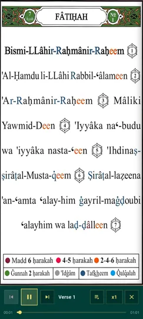
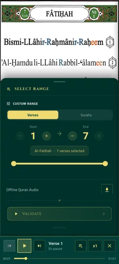
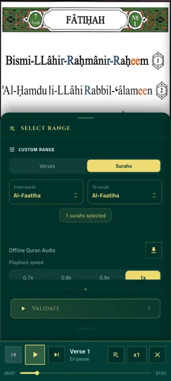
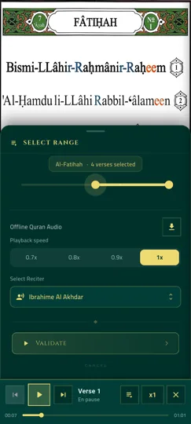

Une écoute pensée pour l'apprentissage
Entendre la bonne prononciation est essentiel pour apprendre à réciter le Coran correctement. Noor Phonetic Quran associe chaque verset à un audio synchronisé, pour que vous puissiez suivre le texte, sa phonétique et l'écoute en même temps.
Vous n'êtes pas limité à un seul récitateur ni à une connexion Internet permanente : choisissez votre voix préférée et téléchargez l'audio pour l'emporter partout avec vous.
Ce que propose l'audio du Coran
- Audio synchronisé verset par verset — chaque verset est lu à voix haute au moment où vous le lisez, pour corriger votre prononciation en temps réel.
- Plusieurs récitateurs au choix — sélectionnez le récitateur qui vous convient le mieux parmi ceux disponibles dans l'application.
- Écoute par verset, sourate ou plage de sourates — choisissez précisément la portion du Coran que vous souhaitez écouter.
- Vitesse de lecture réglable — ralentissez l'audio de 0.7x à 1x pour mieux détacher chaque mot lorsque vous apprenez.
- Téléchargement pour écoute hors ligne — téléchargez l'audio à l'avance pour écouter le Coran sans connexion Internet, où que vous soyez.
Aperçu de l'audio du Coran




Questions fréquentes sur l'audio du Coran
L'audio est-il synchronisé avec le texte ?
Oui, chaque verset est accompagné d'un audio synchronisé pour entendre la prononciation correcte pendant que vous suivez le texte et sa transcription phonétique.
Combien de récitateurs sont disponibles ?
Vous pouvez choisir parmi plusieurs récitateurs du Coran directement dans les réglages de lecture audio, selon vos préférences d'écoute.
Peut-on écouter le Coran hors ligne ?
Oui, vous pouvez télécharger l'audio d'un verset, d'une sourate ou d'une plage de sourates pour une écoute complète sans connexion Internet.
Peut-on changer la vitesse de lecture de l'audio ?
Oui, la vitesse de lecture est réglable de 0.7x à 1x pour adapter l'écoute à votre niveau d'apprentissage.